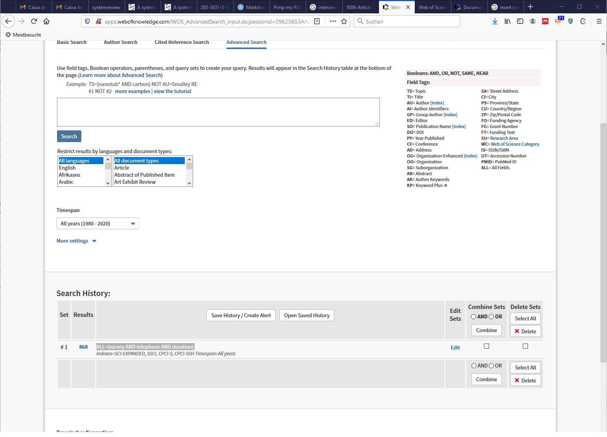
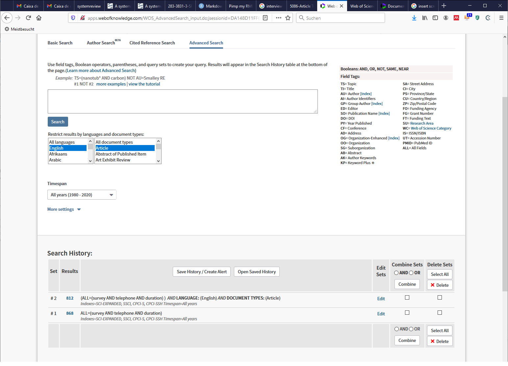
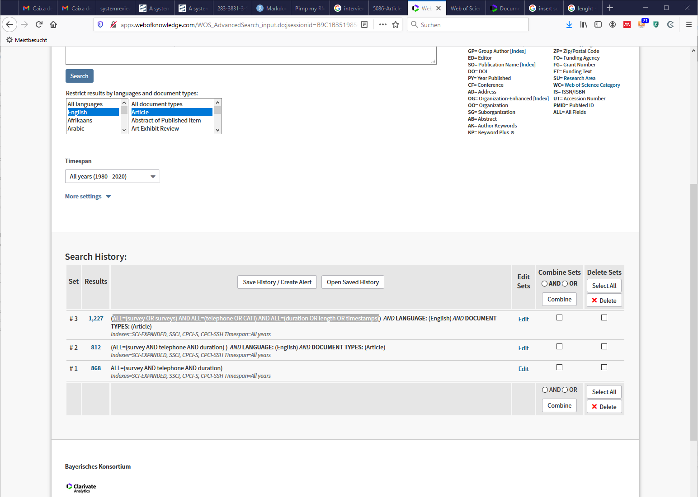
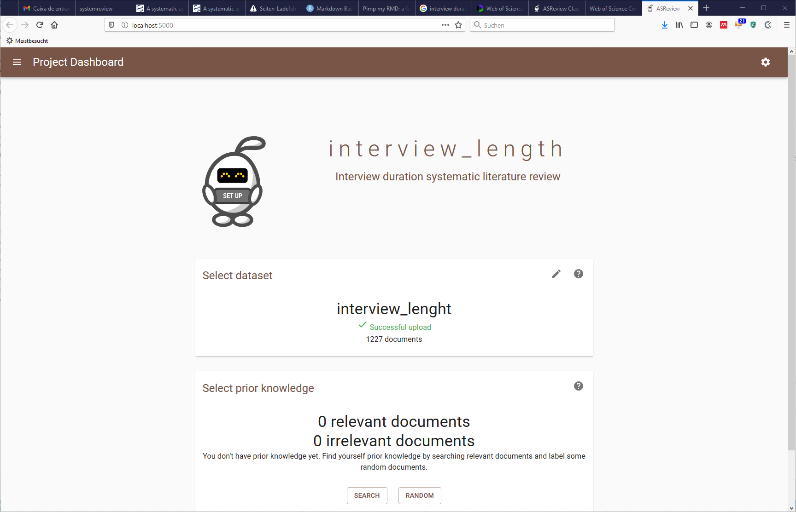
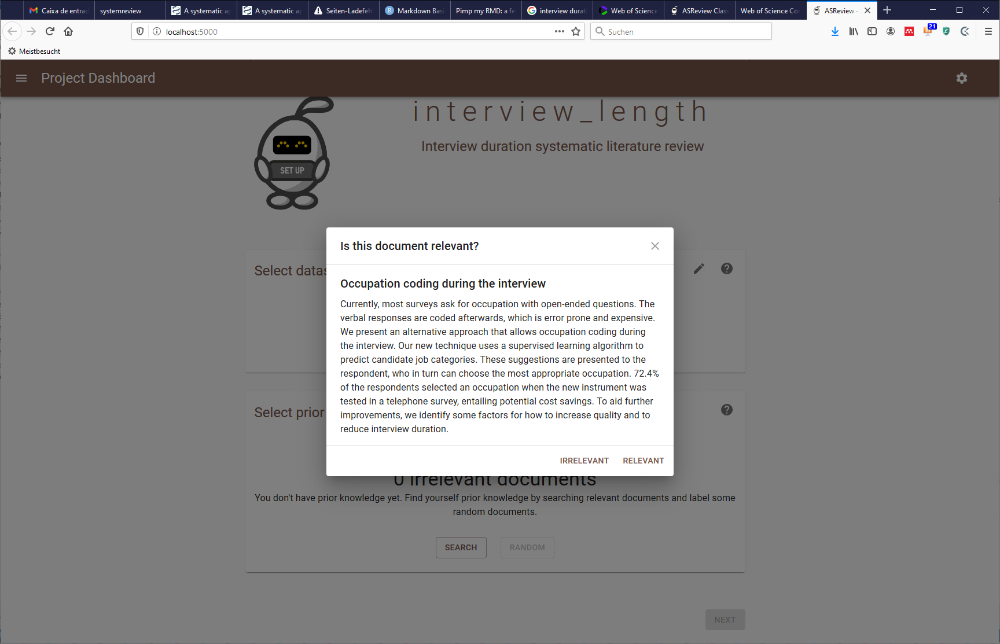
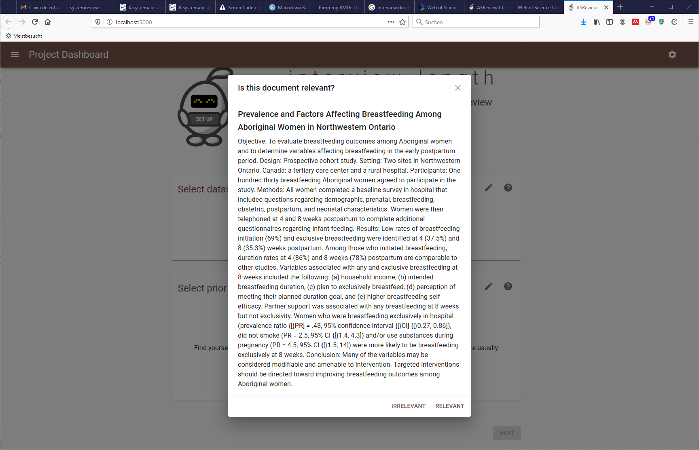
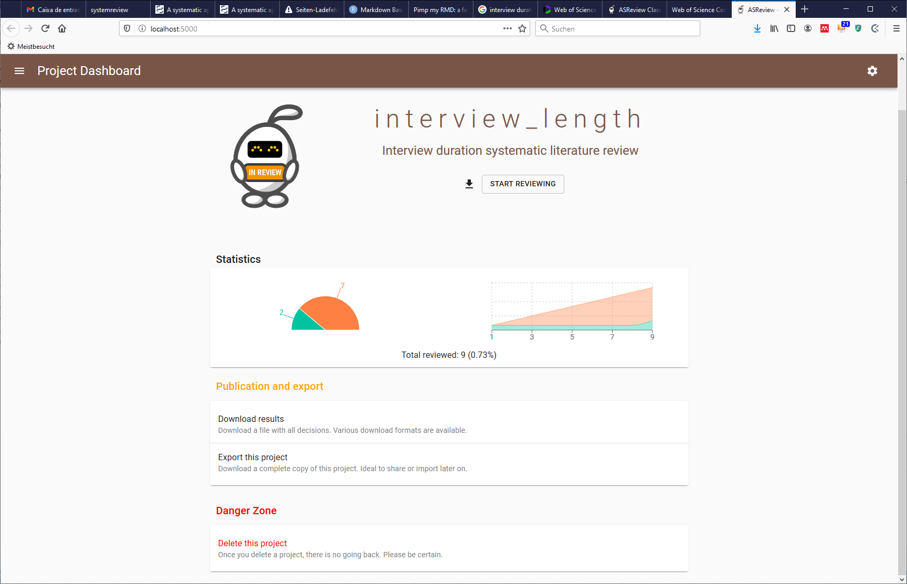
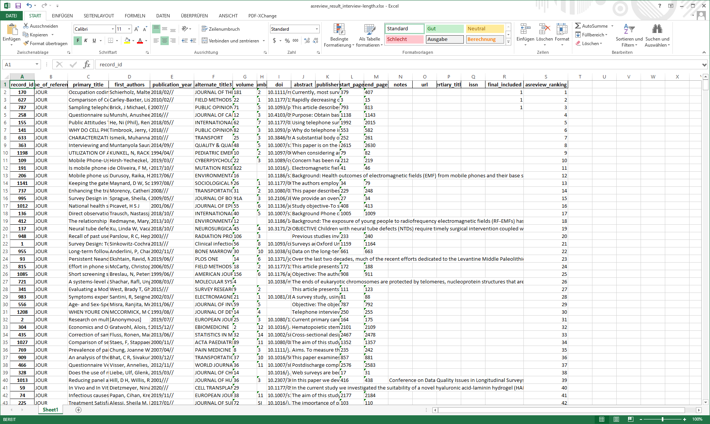

The main goal of this document is to introduce systematic reviews, explain why they are useful and present a workflow to conduct systematic review with the help of an active learning system.
Systematic literature reviews are a method of making sense of large bodies of information, and a means of contributing to the answers to questions about what works and what does not – and many other types of question too. They are a method of mapping out areas of uncertainty, and identifying where little or no relevant research has been done, but where new studies are needed.
Systematic reviews also flag up areas where spurious certainty abounds. These are areas where we think we know more than we do, but where in reality there is little convincing evidence to support our beliefs.
Petticew & Roberts, 2005, pp. 2
A systematic review answers strives to comprehensively identify, appraise, and synthesize all the relevant studies on a given topic. Systematic reviews are often used to test just a single hypothesis, or a series of related hypotheses.
A meta-analysis uses a specific statistical technique for synthesizing the results of several studies into a single quantitative estimate (i.e., a summary effect size).
A narrative review is the process of synthesizing primary studies and exploring heterogeneity descriptively, rather than statistically.
Petticew & Roberts, 2005, pp. 19
It is a fair criticism of scientific research that it is often difficult to know which, if any, study to believe.
Newton’s Third Law of Motion: ‘‘For every expert there is an equal and opposite expert.’’
The traditional scientific approach to this problem is to carry out a literature review.
However, traditional literature reviews frequently summarize highly unrepresentative samples of studies in an unsystematic and uncritical fashion.
But the problem is not just one of inconsistency, but one of information overload.
The massive expansion of research output, both in peer-reviewed publications, and unpublished, e.g. in conference presentations or symposia, mean it is difficult to establish what work has been done in your area already, and to ensure that knowledge keeps up to date with the best research evidence.
Systematic reviews are literature reviews that adhere closely to a set of scientific methods that explicitly aim to limit systematic error (bias), mainly by attempting to identify, appraise and synthesize all relevant studies (of whatever design) in order to answer a particular question (or set of questions).
Systematic review will be most useful when:
• there is a clear and defined research question
• several empirical studies have been published
• there is uncertainty about the results
A systematic review needs a detailed protocol that describes how the review will be processed and methods that will be applied. There are several published examples of such protocols. Here we follow the protocol suggested by Bramer et al. (2018) which consists on the following steps:
Determine a clear and focused question
Describe the articles that can answer the question
Decide which key concepts address the different elements of the question
Decide which elements should be used for the best results
Choose an appropriate database and interface to start with
Document the search process in a text document
Identify appropriate index terms in the thesaurus of the first database
Identify synonyms in the thesaurus
Add variations in search terms
Use database-appropriate syntax, with parentheses, Boolean operators, and field codes
Optimize the search
Evaluate the initial results
Check for errors
Translate to other databases
Test and reiterate
Note: This tutorial will not follow through with an exhaustive account of each of these steps. Instead, a shortened version of this list will presented and discussed.
For the sake of this exercise, the aim is to answer the following question:
What factors explain interview duration in computer assisted telephone surveys?
Research articles that collect and analize interview duration with CATI survey data.
Survey
telephone
Interview duration
There is a very long list of academic databases and search engines.
How do you choose?
In addition to any specific requirements which might come from the specificity of the research question (e.g. medical trials have dedicated databases), recent research by Gusenbauer and Haddaway (2019) suggests the following databases:
Gusenbauer and Haddaway (2019) further suggest that systems such as Google scholar, have severe performance limitations and should only be considered supplementary to these latter databases, especially for non-query‐based search methods where they might still provide great benefit.
For the sake of this exercise, we go with the Web of Science Core Collection
Keep an log of the all the steps taken to make the search reproducible.
The initial terms we identify are the following:
Check the advance search help menu of WoS
The start of our query will be the following:
ALL=(survey AND telephone AND duration)

We can start delimiting and optimizing our search by, for example, selecting the language and the type of documents.

Next we can add the synonyms we previously identified.
ALL=(survey OR surveys) AND ALL=(telephone OR CATI) AND ALL=(duration OR length OR timestamps)

Extend this query to other databases fitting your research question.
So now we got the data and we have 1227 entries. Do we have to read all this papers?
Short answer: yes.
However, we can look for the help of more systematized methods to reduce the number of papers we actually have to read.
ASReview enables you to screen more texts than the traditional way of screening in the same amount of time. Which means that you can achieve a higher quality than when you would have used the traditional approach.
Detailed information regarding how to install and the data format can be found in the website.
After compiling the results of the systematic review to a .ris format file we can introduce it to ASreview.

Then we must set the priors to train the active learning system. This is done by looking at the abstracts and selecting the ones that are relevant or irrelevant to our research question.


After classifying some documents (the more, the better) we can select the model of our preference. More information about the specificites of each of this models can be found in the ASreview website.

Final results of our active learning systematic review. All 1227 are now ranked by relevance following the priors we set in the active learning model.

kable(head(df))| record_id | type_of_reference | primary_title | first_authors | publication_year | alternate_title3 | volume | number | doi | abstract | publisher | start_page | end_page | notes | url | tertiary_title | issn | final_included | asreview_ranking |
|---|---|---|---|---|---|---|---|---|---|---|---|---|---|---|---|---|---|---|
| 170 | JOUR | Occupation coding during the interview | Schierholz, Malte, Gensicke, Miriam, Tschersich, Nikolai, Kreuter, Frauke | 2018/02// | JOURNAL OF THE ROYAL STATISTICAL SOCIETY SERIES A-STATISTICS IN SOCIETY | 181 | 2 | 10.1111/rssa.12297 | Currently, most surveys ask for occupation with open-ended questions. The verbal responses are coded afterwards, which is error prone and expensive. We present an alternative approach that allows occupation coding during the interview. Our new technique uses a supervised learning algorithm to predict candidate job categories. These suggestions are presented to the respondent, who in turn can choose the most appropriate occupation. 72.4% of the respondents selected an occupation when the new instrument was tested in a telephone survey, entailing potential cost savings. To aid further improvements, we identify some factors for how to increase quality and to reduce interview duration. | NA | 379 | 407 | NA | NA | NA | NA | 1 | 1 |
| 627 | JOUR | Comparison of Cell Phone and Landline Surveys: A Design Perspective | Carley-Baxter, Lisa R, Peytchev, Andy, Black, Michele C | 2010/02// | FIELD METHODS | 22 | 1 | 10.1177/1525822X09360310 | Rapidly decreasing coverage of landline surveys is increasing the need to implement dual-frame surveys for inference to the adult U.S. population. Vast differences between the way cell phones and landlines are used, and the populations using them, require separate data collection designs. Yet research comparing cell phone surveys to landline telephone surveys is scarce with respect to operational outcomes. The authors test hypothesized differences between cell phone and landline interviewing through experiments on survey topic and length and find that these factors may not have the same impact in cell phone surveys. To help optimize calling cell phone numbers in future studies, the authors present self-reported cell phone use patterns and other factors affecting the probability of contact and sampling design. To inform the inclusion of adults with both a cell and landline phone, they compare cell phone use among cell phone only and cell with landline cases. The authors found notable differences between the cell only and cell with landline respondents in terms of cell phone use. Implications and directions for future work are discussed. | NA | 3 | 15 | NA | NA | NA | NA | 1 | 2 |
| 787 | JOUR | Sampling telephone numbers and adults, interview length, and weighting in the California Health Interview Survey cell phone pilot study | Brick, J Michael, Edwards, W Sherman, Lee, Sunghee | 2007/// | PUBLIC OPINION QUARTERLY | 71 | 5 | 10.1093/poq/nfm052 | This article describes several features included in a California Health Interview Survey cell phone pilot study that differ from earlier cell phone surveys conducted in the United States. One difference is that the study used a screening design and only adults living in cell-only households were interviewed. Most of the previous studies used dual frame designs. Another difference was the development and implementation of a within-household adult sampling procedure to cover adults when cell phones were shared in the household. The study was also intended to determine if conducting a cell phone interview of the same scope and length as a regular telephone interview was feasible. Most previous surveys were focused on cell phone topics and were shorter than the comparable landline surveys. We then explore some interesting problems that arise in weighting a cell phone survey using a screening design. We conclude with a discussion of planning a new cell phone survey in 2007 that incorporates findings from this study. | NA | 793 | 813 | NA | NA | NA | NA | 1 | 3 |
| 258 | JOUR | Questionnaire survey to assess the pattern and characteristics of cell-phone usage among Indian oncologists | Munshi, Anusheel, Dutta, Debanarayan, Tike, Pramod, Agarwal, Jai Prakash | 2016/// | JOURNAL OF CANCER RESEARCH AND THERAPEUTICS | 12 | 3 | 10.4103/0973-1482.164704 | Purpose: Obtain baseline data of cell-phone usage in the medical (MO), surgical (SO) and radiation (RO) oncology community practicing in India. Materials and Methods: Indigenously prepared cell-phone usage related questionnaire was used in the present study after approval by the Institutional Ethics/Scientific Committees. The questionnaire had 41 items and was made to assess the cell-phone usage parameters, utility in clinical practice, awareness, and to compare parameters between oncology specialties. Between November 2009 and January 2010, the questionnaire was sent as an E-mail attachment to 200 oncologists in India. Results: In all, 123 responses were received (61% responders); 84 (68.3%) were RO. The median age of responders was 35 years. Overall, 80% felt handicapped without cell-phone. The Mean cell-phone score, an index to assess overall usefulness over a score of 1-10, was 6.46 (median 7, standard deviation 1.709). There was no significant difference between RO, MO and SO in duration of usage (P= 0.235), number of cell-phones (P= 0.496), call duration per day (P= 0.490) and dependence on cell-phone (P= 0.574). Age of starting cell-phone usage was earlier in RO (P= 0.086). Professional usage was significantly more by MO and SO compared to RO (P < 0.001); however, the former were less aware of any potential cell-phone hazards compared to RO (P < 0.007). Conclusion: The results of the first such questionnaire based study have been presented. Most oncologists consider cell-phones a useful tool in patient care. More RO are aware of potential cell-phone hazards compared to non-RO’s. | NA | 1138 | 1143 | NA | NA | NA | NA | NA | 4 |
| 155 | JOUR | Public Attitudes Toward the Police: Findings From a Dual-Frame Telephone Survey | He, Ni (Phil), Ren, Ling, Zhao, Jihong (Solomon), Bills, Matthew A | 2018/05// | INTERNATIONAL JOURNAL OF OFFENDER THERAPY AND COMPARATIVE CRIMINOLOGY | 62 | 7 | 10.1177/0306624X17690722 | Using telephone survey data collected in Houston, Texas, this study explores the feasibility of a dual-frame (landline and cell-phone-only household samples) design survey in police studies and compares the corresponding characteristics of survey respondents and multiple measures of citizens’ attitudes toward the police. It was found that a cell-phone interview with the same scope and length of a landline interview is indeed operationally feasible, albeit at higher cost and lower response rate. Compared with their landline counterparts, respondents in our cell-phone-only sample are younger, males, members of ethnic minority, renters, mobile, and less educated. No appreciable attitudinal differences among the respondents are observed between the two samples. In addition, substantive outcomes from multivariate regression models do not seem to be impacted by the types of phones used. Implications for future studies are included. | NA | 1992 | 2015 | NA | NA | NA | NA | NA | 5 |
| 141 | JOUR | WHY DO CELL PHONE INTERVIEWS LAST LONGER? A BEHAVIOR CODING PERSPECTIVE | Timbrook, Jerry, Olson, Kristen, Smyth, Jolene D | 2018/// | PUBLIC OPINION QUARTERLY | 82 | 3 | 10.1093/poq/nfy022 | Why do telephone interviews last longer on cell phones than landline phones? Common explanations for this phenomenon include differential selection into subsets of questions, activities outside the question-answer sequence (such as collecting contact information for cell-minute reimbursement), respondent characteristics, behaviors indicating disruption to respondents’ perception and comprehension, and behaviors indicating interviewer reactions to disruption. We find that the time difference persists even when we focus only on the question-answer portion of the interview and only on shared questions (i.e., eliminating the first two explanations above). To learn why the difference persists, we use behavior codes from the U.S./Japan Newspaper Opinion Poll, a dual-frame telephone survey of US adults, to examine indicators of satisficing, line-quality issues, and distraction. Overall, we find that respondents on cell phones are more disrupted, and that the difference in interview duration occurs because cell phone respondents take longer to provide acceptable answers. Interviewers also slow their speed of speech when asking questions. A slower speaking rate from both actors results in a longer and more expensive interview when respondents use cell phones. | NA | 553 | 582 | NA | NA | NA | NA | NA | 6 |
How to report systematic review and metanalyses?